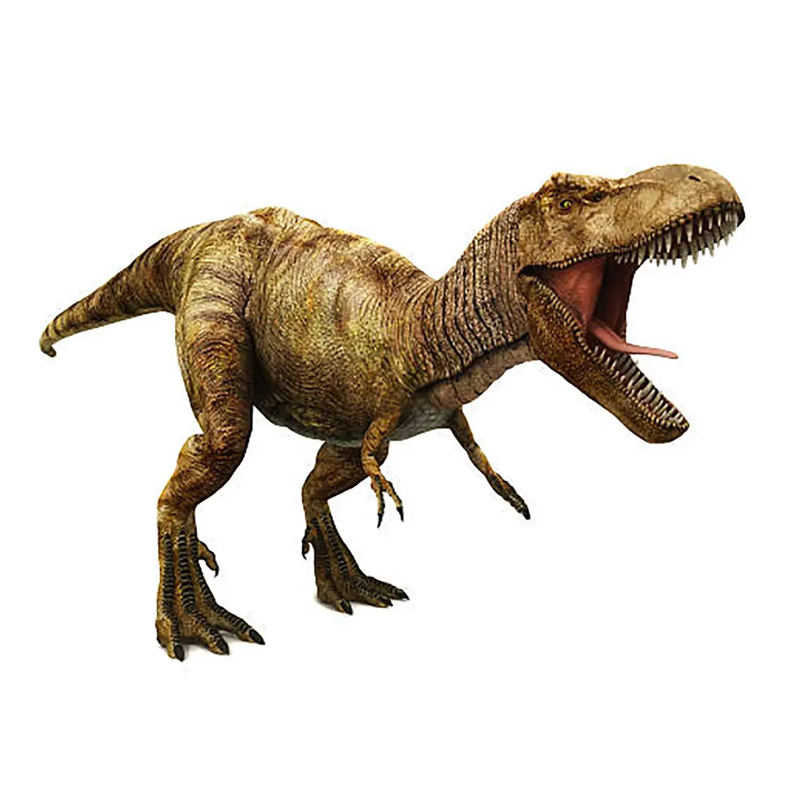

ガオー！
ここはジュラ紀のウェブサイトだ！

ティラノサウルスの生態
時代と生息地
- 時代: 約6,800万年前～約6,600万年前（白亜紀末期）
- 場所: 現在の北アメリカ大陸西部
体格と特徴
- 大きさ: 全長約12～13メートル、体重は約6～9トン
- 頭部と歯: 長さ1.5メートルの巨大な頭蓋骨と、最大30センチの歯で獲物の骨ごと噛み砕いた
- 感覚: 優れた嗅覚と、立体視できる目で正確な距離感を把握
食性と狩り
- 食性: 生態系の頂点に立つ肉食恐竜
- 狩りの方法: 待ち伏せ型のハンターだったという説が有力
トリケラトプスの生態
時代と生息地
- 時代: 約6,900万年前～約6,600万年前（白亜紀後期）
- 場所: 現在の北米大陸
体格と特徴
- 大きさ: 全長約9メートル、体重6～8トン
- 特徴: 3本の角と大きな骨質のフリル
食性と防御
- 食性: 植物食恐竜（ヤシ、ソテツ、シダなど）
- 防御: 角とフリルで捕食者から身を守った
ヴェロキラプトルの生態
時代と生息地
- 時代: 約7,500万年前～約7,100万年前（白亜紀後期）
- 場所: 現在のモンゴル、中国（ゴビ砂漠）
体格と特徴
- 大きさ: 体長約1.5～2メートル、体重15～20キログラム
- 特徴: 後ろ足の鎌状の鉤爪（シックルクロー）、羽毛を持っていた
食性と狩り
- 食性: 小型肉食恐竜（小型草食恐竜、爬虫類など）
- 狩りの方法: 俊敏な捕食者、夜行性の可能性も
ブラキオサウルスの生態
時代と生息地
- 時代: 約1億6,100万年前～約1億4,600万年前（ジュラ紀後期）
- 場所: 北米、アフリカ
体格と特徴
- 大きさ: 全長約25メートル、体重40～70トン
- 特徴: 前肢が後肢より長く、キリンのように肩が高い
食性と行動
- 食性: 植物食恐竜（高い位置の葉や新芽）
- 行動: 群れで生活し、高い位置から捕食者を警戒